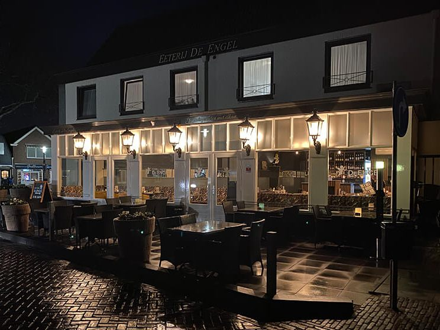
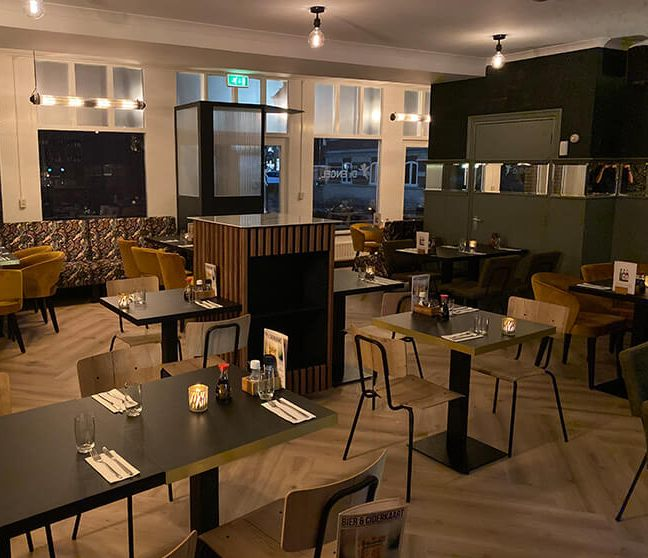
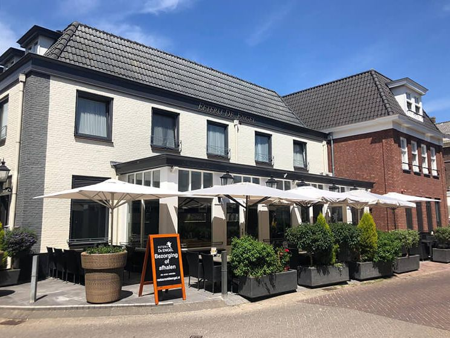
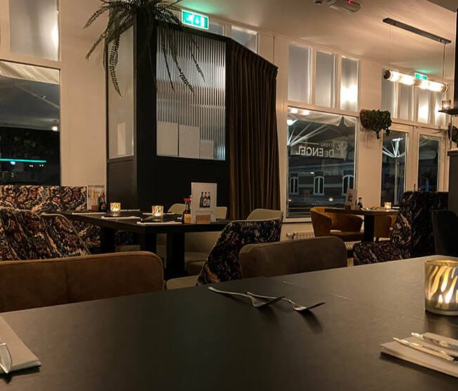
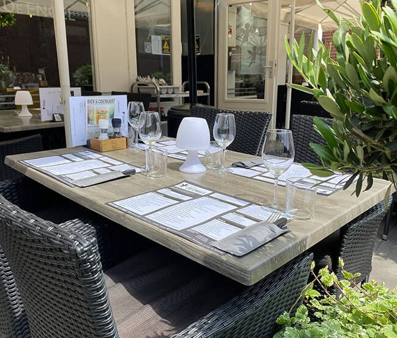
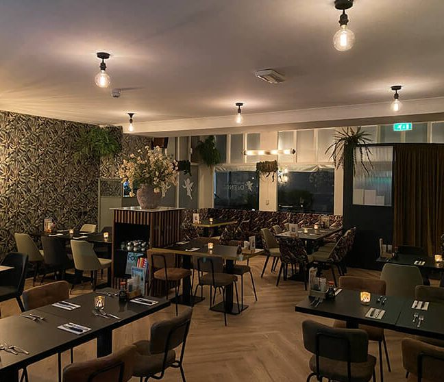
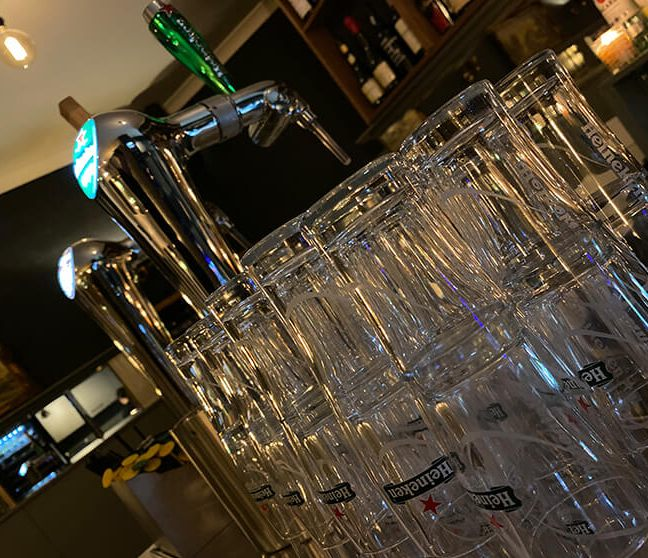

Nieuwstraat 3a, centrum Kerkdriel
Onbeperkt tapas & bites, aan tafel geserveerd
Kleine gerechtjes uit de internationale keuken, de hele avond lang. U kiest, wij brengen het naar uw tafel. Geen buffet, wel zoveel rondes als u wilt.
woensdag t/m zondag vanaf 17:00

Zo werkt onbeperkt tapas
-
Kies uw gerechtjes
Per ronde kiest u 2 gerechtjes per persoon en eventueel een extra bijgerechtje (60 t/m 63).
-
Wij serveren aan tafel
Elk gerechtje wordt klein uitgeserveerd, gewoon aan uw tafel. Dus niet in buffetvorm.
-
Zoveel rondes als u wilt
Koude en warme gerechtjes tot 21:30 uur, desserts tot 21:45 uur.
Palmen aan de muur, kaarsjes op tafel
Eeterij De Engel ligt in het centrum van Kerkdriel, waar ons enthousiaste team voor u klaarstaat. Binnen zit u tussen het palmbehang en warme lampen. Bij mooi weer is het ook prima vertoeven op ons zonnige terras.






Openingstijden
| Maandag | gesloten |
|---|---|
| Dinsdag | gesloten |
| Woensdag | 17:00 – 21:30 |
| Donderdag | 17:00 – 21:30 |
| Vrijdag | 17:00 – 21:30 |
| Zaterdag | 17:00 – 21:30 |
| Zondag | 17:00 – 21:30 |
Reserveren
U wilt een hapje bij ons komen eten? Gezellig! Wij vragen u vriendelijk om uw reservering via Eetnu te doen. Bellen kan natuurlijk ook.
Mobiel: 06 - 10 10 74 67
Contact & route
Eeterij De EngelNieuwstraat 3a
5331 BA Kerkdriel
0418 - 631 557
06 - 10 10 74 67
info@restaurantdeengel.nl
Volg ons op Instagram: @eeterijdeengel
Plan uw route